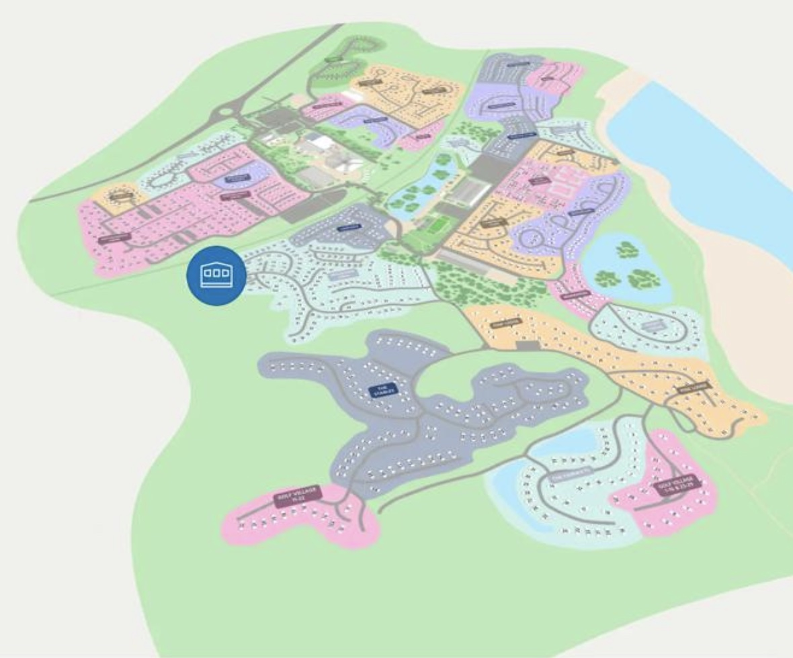

我們的十月旅程
5日4夜
2026年10月 19–23 日
Criccieth·Porthmadog·Bala
Lake Vyrnwy·Beddgelert
Woodland Wanderer·Mountain Spirit
Lake Vyrnwy·Beddgelert
Woodland Wanderer·Mountain Spirit
Day 1
0 / 0 done
火車
兩條 Ffestiniog & Welsh Highland Railways 路線，資料根據官方訂位頁面截圖整理。點選下方切換。
Before we go
Your ticks are saved on this device.
🎒 What to bring
Suggestions based on this trip — tap to tick as packed, or add your own.
Backup options
Saved Google Maps place
Check the place at the link🔗 Open
Check the place at the link🔗 Open
🏠 住宿 · No. 150 Mountain View
Haven Hafan y Môr Holiday Park銅級 Bronze caravan2 間睡房
下圖藍色標記就是 150 號。位置在園區西面（左邊）的外圍，靠近草地；北面（上方）是粉紅色的住宅區。點 ＋ 放大，拖動地圖移動。

紅色虛線只是根據地圖道路推測的示意路線，入口位置亦是推測，請以園內路牌及接待處指引為準。
導航目的地為園區座標（VisitWales 資料）。郵編 LL53 6HX（另有來源為 LL53 6NQ），出發前請向 Haven 核對。